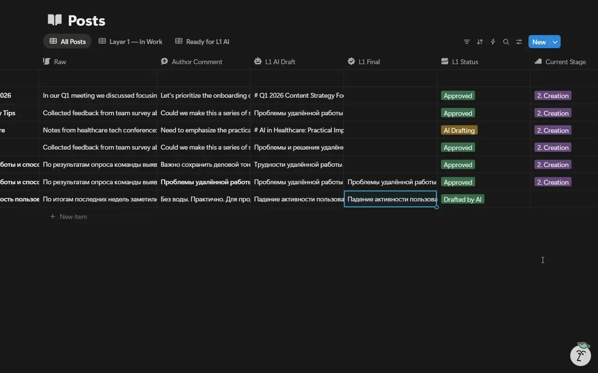

N8N COPILOT / EDITORIAL PIPELINE
Текст проходит
через четыре роли.
Исходный материал не переписывается одним непрозрачным запросом. Документация описывает последовательную работу слоёв и отдельную переработку выбранного этапа.
- 00RAWИсходный материал
- 01L1Первый AI Draft
- 02L2Следующий редакционный слой
- 03L3Отдельная доработка
- 04L4Финальная редактура
- 05BODYИтоговая версия
Комментарий → выбранный слой → новая версия.
По найденной спецификации переработка не должна уничтожать Raw и чужие этапы. Редактор видит черновик, комментарий и изменения выбранного слоя в рабочей базе.
РАБОЧИЙ ПРОЦЕСС / NOTIONРабочая база
Рабочая база
контента.
Рабочая база показывает материал и историю его редакционной доработки.

Результат каждого этапа виден перед переходом к следующему.
Редакционный процесс разделяет черновик, последовательную доработку и финальный текст для публикации.